Record · 2026. 11. 26.~27.
갯벌과 습지, 그리고 전북과 맺은 협약
전북 생태관광 교류방문 — 고창 현장과 전북생태관광육성지원센터
제주특별자치도 생태관광지원센터가 전북의 생태관광 현장을 찾았습니다. 첫날 세계자연유산 고창갯벌과 국가생태관광지역 고창 운곡람사르습지에서 해설과 함께 탐방하며, 연안·내륙 습지를 생태관광으로 운영하는 방식을 살펴보았습니다. 둘째 날에는 전주의 전북생태관광육성지원센터에서 생태관광 활성화 교류 및 업무협약을 맺고, 두 센터의 사업을 소개하며 협력 방안을 이야기했습니다.
왜 갔나요
센터는 연안과 내륙 습지에서 생태관광을 어떻게 운영하는지 현장에서 확인하고, 전북과 사업을 나누며 협력할 길을 찾기 위해 전북 생태관광 교류방문에 나섰습니다. 2027년 도내 생태관광지역과 프로그램 소개·홍보를 준비하며, 다른 광역 지역의 운영 사례를 비교해 보려는 뜻도 있었습니다.
| 날짜 | 2026년 11월 26일(목)~27일(금), 1박 2일 |
|---|---|
| 어디 | 세계자연유산 고창갯벌(람사르고창갯벌센터), 국가생태관광지역 고창 운곡람사르습지, 운곡 고인돌과 홍보관(1일차) · 전북생태관광육성지원센터, 전주(2일차) |
| 누가 | 제주특별자치도 생태관광지원센터 |
교류방문 계획은 진행 사업 페이지에 있습니다.
1일차 · 11월 26일(목) 고창 현장 영상
장소마다 무엇을 보았고 무엇을 배웠는지 나레이션과 현장 해설로 담았습니다.
1. 세계자연유산 고창갯벌
2분 19초 · 람사르고창갯벌센터 전시실과 탐방차, 생태안내인 해설
2. 고창 운곡람사르습지
2분 31초 · 마을과 함께 습지를 지키는 운영
3. 운곡 고인돌과 홍보관
1분 28초 · 습지와 유적을 한 길로 잇는 탐방
1일차 · 어디서 무엇을 보았나요
- 세계자연유산 고창갯벌
람사르고창갯벌센터 전시실에서 갯벌 퇴적층, 쉐니어, 갯벌 생물 모형 해설을 들은 뒤, 센터 탐방차를 타고 생태안내인의 해설을 들으며 갯벌 탐방로를 달렸습니다. 물이 들고 나며 하루에도 모습이 바뀌는 갯벌, 물이 차오를 때 물새가 쉴 수 있도록 만든 쉼터, 겉으로 보기와 달리 위험할 수 있는 갯벌의 안전 이야기를 들었습니다.
- 국가생태관광지역 고창 운곡람사르습지
탐방열차로 습지 안쪽까지 들어가 생태안내인과 저수지 탐방로를 걸었습니다. 사람의 출입이 오래 막혔던 곳의 논이 습지로 돌아온 내력, 습지를 둘러싼 마을과 꾸준히 관계를 쌓아 온 과정, 멧돼지가 무너뜨린 논둑을 다시 쌓아 반딧불이가 돌아오게 한 일과 반딧불이 축제, 찾아가는 생태학교 같은 운영 프로그램을 들었습니다.
- 운곡 고인돌과 홍보관
습지 탐방길은 고인돌 유적으로 이어집니다. 고인돌을 둘러싼 이야기와 함께, 춘분 해돋이를 보는 행사와 늦반딧불이 행사를 이곳에서 연다는 설명을 듣고 홍보관을 둘러보았습니다.
2일차 · 11월 27일(금) 전북생태관광육성지원센터
1분 24초 · 업무협약 체결식과 두 센터의 사업 소개 · 일부 장면은 실제 사진에 AI로 움직임을 더함(화면에 표시)
둘째 날 오전, 전주의 전북생태관광육성지원센터를 찾았습니다. 첫날 고창갯벌과 운곡람사르습지를 다녀온 이야기로 인사를 나눈 뒤, 「생태관광 활성화 교류 및 업무협약 체결식」에서 두 센터장이 협약서에 서명했습니다.
- 업무협약 체결
전북생태관광육성지원센터와 제주특별자치도 생태관광지원센터가 생태관광 활성화를 위한 교류와 협력을 약속하는 협약을 맺었습니다. 협약서를 들고 기념촬영을 하고 다 함께 단체사진을 찍었습니다.
- 두 센터 사업 소개
제주는 생태관광지역 지원, 생태관광주간, 해양보호구역 인식증진, 탐조대회, 갯것이영화제, 기록 홈페이지를 소개했습니다. 전북은 전북 천리길과 생태관광지 지원 등을 소개했습니다.
- 협력 이야기
생태관광지·마을과의 관계, 홍보와 콘텐츠, 성과를 기록하고 나누는 방법, 앞으로의 협력 방안을 이야기했습니다. 끝으로 제주는 해양보호구역 학생 활동 결과물과 기념품을 전하고, 두 센터가 선물과 자료를 나눴습니다.
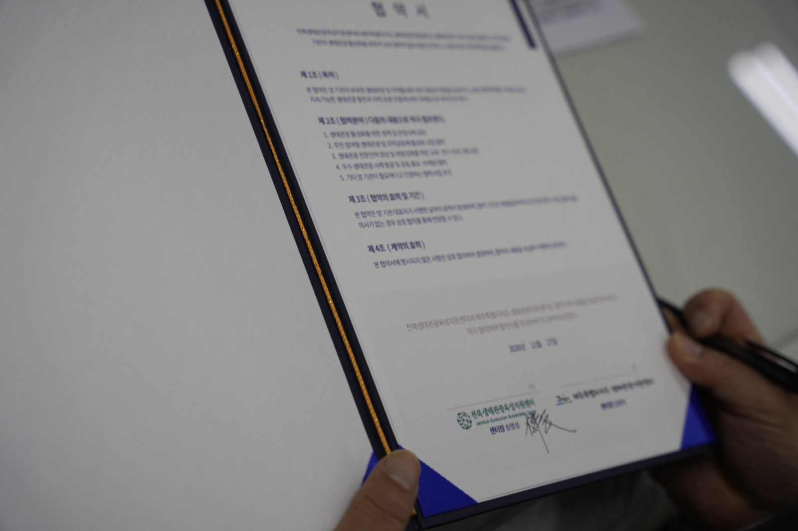
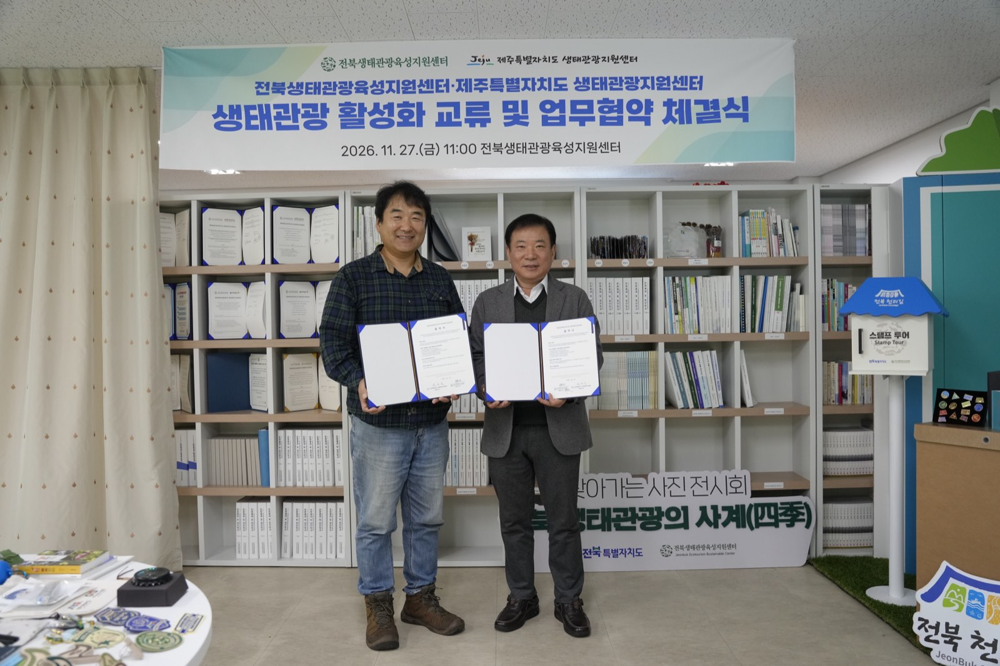
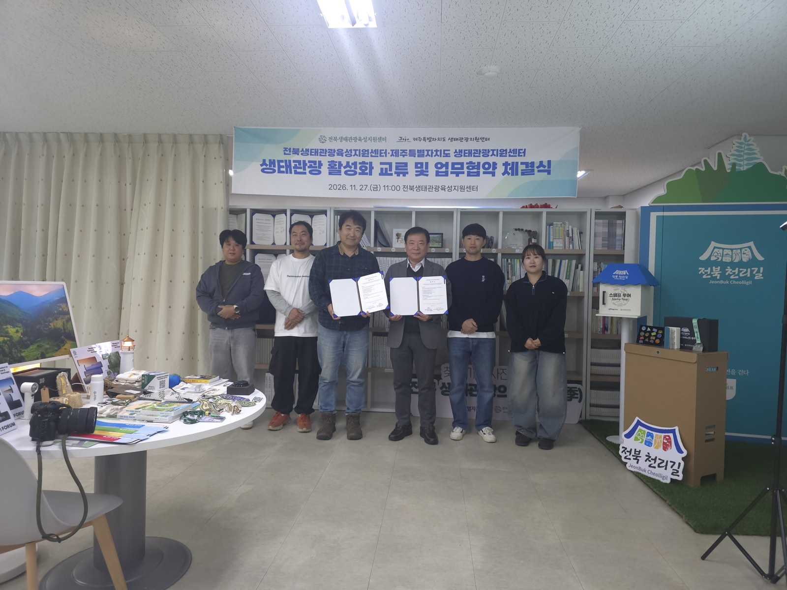
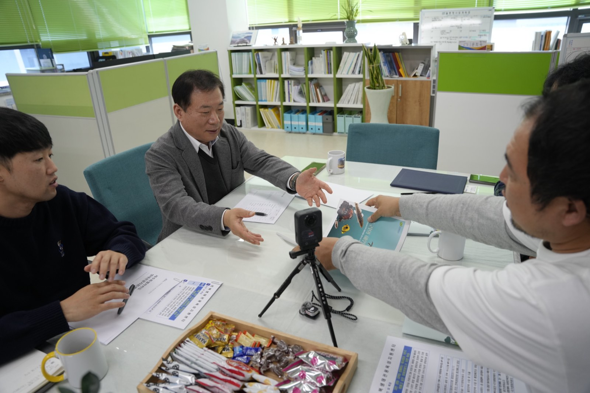
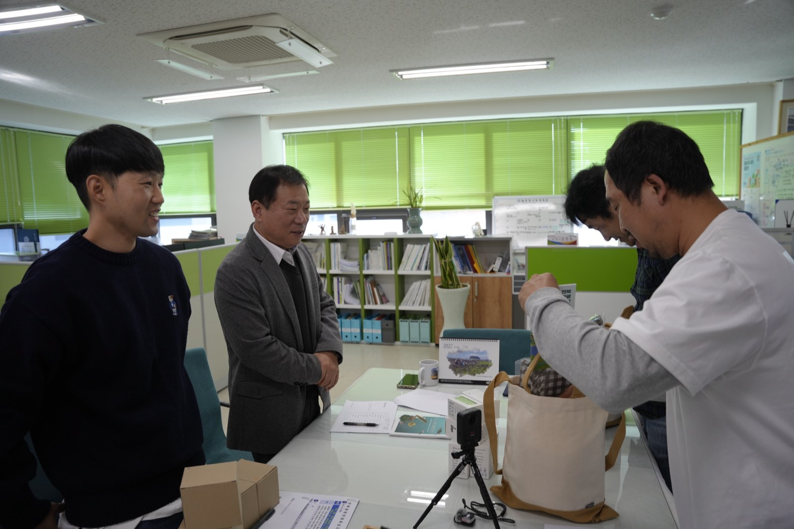
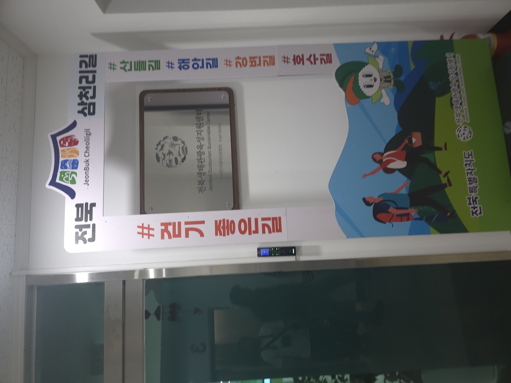
배운 점, 제주에 가져갈 점
- 해설과 함께하는 탐방
고창갯벌은 탐방차와 생태안내인 해설을 함께 운영해, 방문객이 갯벌을 가까이 보면서도 안전하게 다닐 수 있게 합니다.
제주에: 해설사가 동행해 보여 주면서 안전도 지키는 탐방 운영, 물새 쉼터처럼 서식지를 돌보는 관리를 함께 소개합니다.
- 마을과 함께하는 운영
운곡습지는 마을을 꾸준히 찾아가 쌓은 관계를 바탕으로 주민과 함께 습지를 지키고, 복원 성과를 축제와 찾아가는 생태학교로 알립니다.
제주에: 생태관광지역 마을과의 관계를 꾸준히 쌓고, 복원·보전 성과를 행사와 교육 프로그램으로 알리는 방식을 살펴봅니다.
- 자원을 한 길로 잇는 코스
습지 탐방로가 고인돌 유적과 홍보관으로 이어져, 자연과 역사를 한 번에 둘러볼 수 있습니다.
제주에: 습지와 마을의 역사 자원을 한 탐방 코스로 묶고, 계절 행사로 다시 찾을 이유를 만드는 방식을 생각해 봅니다.
- 광역 센터끼리의 교류
전북생태관광육성지원센터와 두 센터의 사업과 운영 경험을 나눴습니다.
제주에: 광역 센터끼리 사업과 운영 경험을 꾸준히 나누는 교류를 이어 가고, 제주의 바다와 전북의 숲·습지·길을 잇는 생태관광을 함께 알리는 협력을 찾습니다.
이동과 탐방 순서
1일차 · 11월 26일(목)
| 오전 | 제주공항 출발, 군산공항 도착 뒤 고창으로 이동 |
|---|---|
| 10:35 | 람사르고창갯벌센터 도착, 전시실 관람 |
| 11:00~11:43 | 센터 탐방차로 고창갯벌 탐방, 생태안내인 해설 |
| 11:53 | 점심 |
| 13:47 | 고창 운곡람사르습지 도착 |
| 13:54~14:40 | 탐방열차로 습지 안쪽까지 이동, 저수지 탐방로 해설 |
| 14:40~15:25 | 논둑 복원 구간과 고인돌 구간 탐방 |
| 15:25~15:56 | 생태연못, 운영 프로그램 이야기 |
| 16:10~16:24 | 운곡 고인돌과 홍보관 관람, 자료 교환 약속 |
| 16:36 | 운곡람사르습지 표지석 앞 단체 사진, 탐방열차로 돌아옴 |
| 저녁 | 전주로 이동 |
2일차 · 11월 27일(금)
| 09:51 | 전북생태관광육성지원센터 도착, 인사와 1일차 답사 이야기 |
|---|---|
| 오전 | 생태관광 활성화 교류 및 업무협약 체결식, 협약서 서명과 기념촬영, 단체 사진 |
| 10:11~10:55 | 두 센터 사업 소개 |
| 10:55~11:23 | 협력 이야기 |
| 11:24 | 선물·자료 교환, 마무리 |
1일차 사진
사진을 누르면 크게 보입니다. 공개를 원하지 않는 사진은 문의로 알려 주세요.
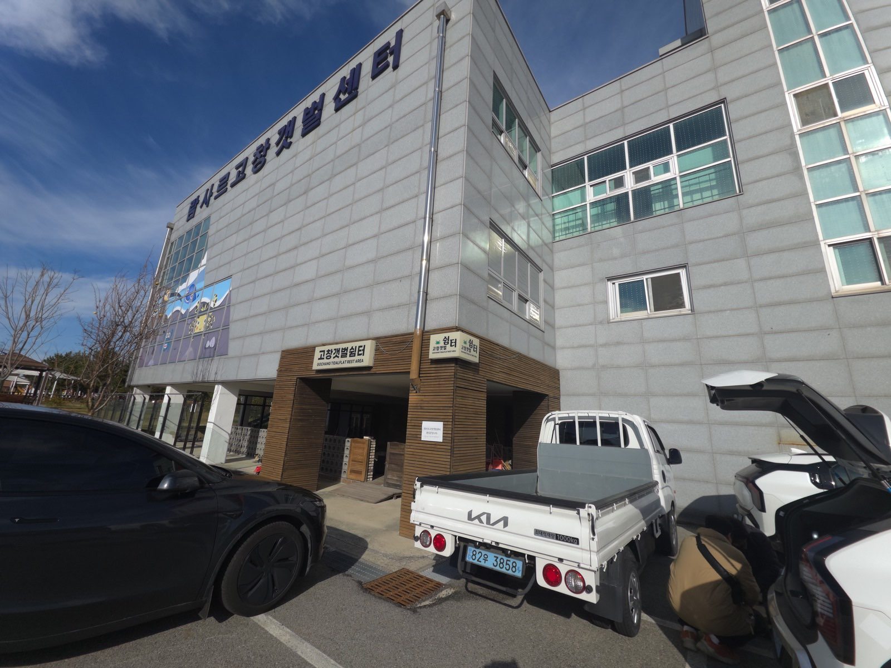
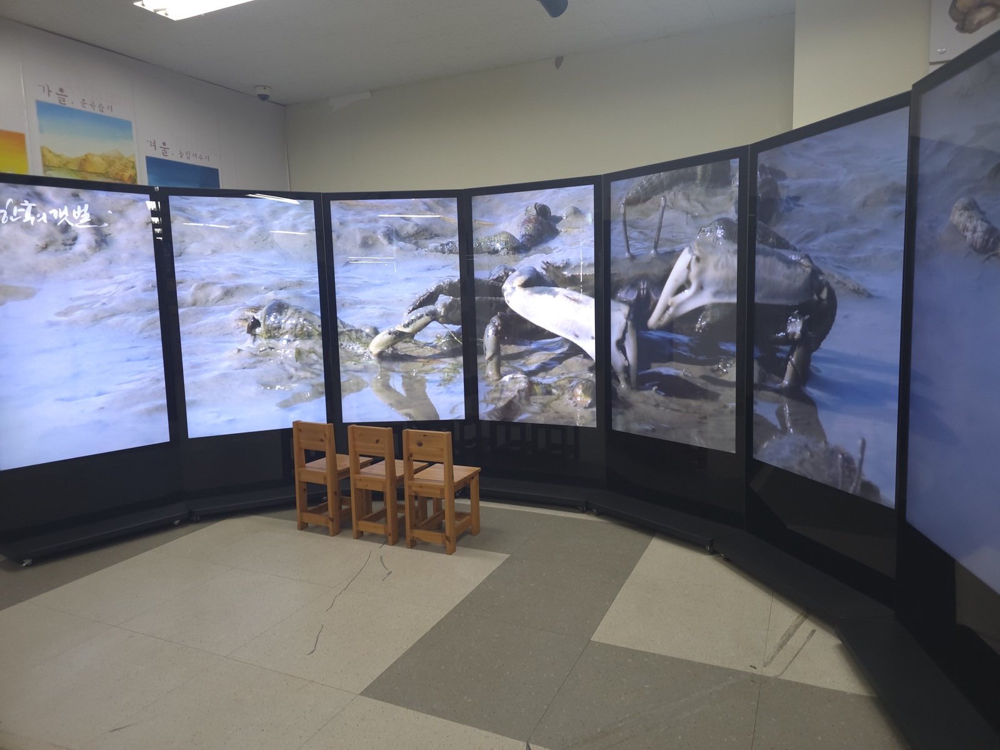
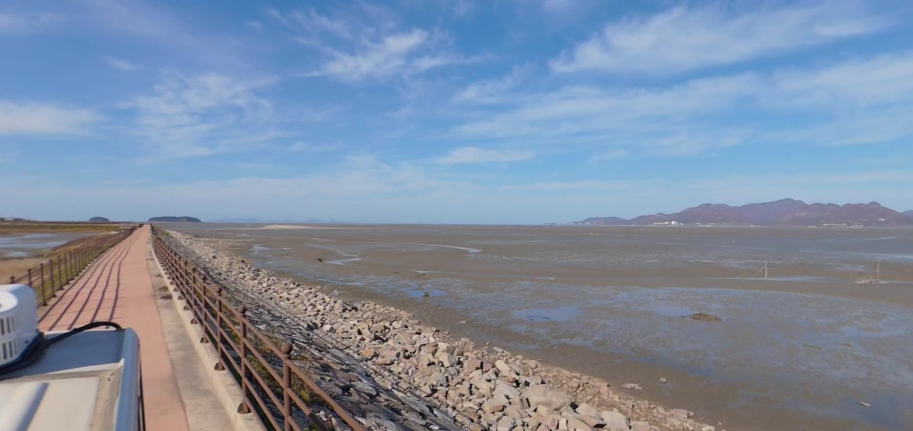
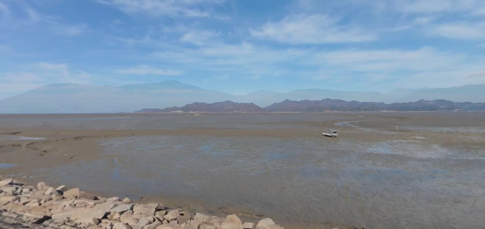
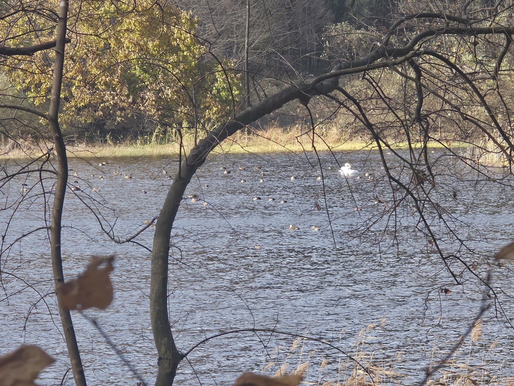
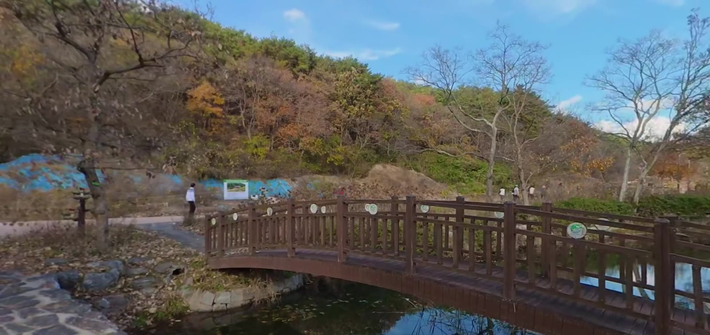
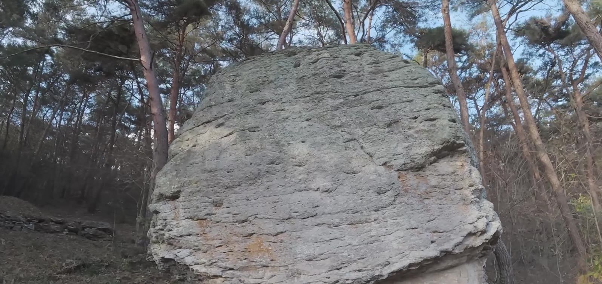
출처
- 사진·영상: 현장 촬영
- 내용: 2026 전북 생태관광 교류방문 계획(안), 현장 해설과 탐방 기록, 업무협약 체결식 현장 기록